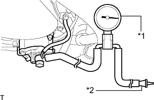

ВАКУУМНЫЙ НАСОС (для моделей с 1KD-FTV) > УСТАНОВКА |
| 1. УСТАНОВИТЕ ВАКУУМНЫЙ НАСОС В СБОРЕ |
Установите 2 новых уплотнительных кольца.
Закрепите насос на двигателе с помощью 2 гаек.
Подсоедините 2 шланга к насосу с помощью фиксатора.
| 2. УСТАНОВИТЕ РАДИАТОР В СБОРЕ |
Установите радиатор в сборе (Нажмите здесь).
| 3. ПРОВЕРЬТЕ ВАКУУМНЫЙ НАСОС В СБОРЕ |
|  |
Отсоедините вакуумный шланг от вакуумного насоса.
Подсоедините шланг датчика разрежения к насосу.
| *1 | Датчик разрежения |
| *2 | Пробка |
Вставьте пробку в другой шланг датчика.
Запустите двигатель и прогрейте его в течение не менее 2 минут.
Измерьте отрицательное давление насоса на холостом ходу двигателя.
Снимите датчик с насоса.
Подсоедините шланг к насосу с помощью фиксатора.